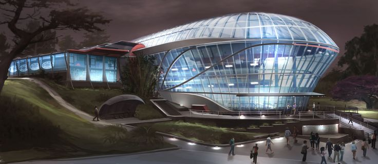

Becas
Programas de apoyo económico para talento con alto potencial.
Innovación, robótica y bienestar humano
Programas de apoyo económico para talento con alto potencial.
Instalaciones de alta tecnología dedicadas a la robótica aplicada.
Formación multidisciplinaria orientada a la industria.
Quiénes somos
El SFIT es una facultad de clase mundial con prestigio en robótica, reconocida por su exposición anual que atrae empresas y genera visibilidad institucional.
Egresados que fundan empresas reconocidas en la industria.

Filosofía, panorama y ruta de crecimiento de la institución.
Desarrollar soluciones tecnológicas innovadoras y accesibles de asistencia y bienestar, diseñadas para mejorar la calidad de vida y el cuidado cotidiano de las personas.
Ser una organización referente en el desarrollo de dispositivos y soluciones de alta tecnología con un gran impacto humano, reconocidos por su funcionalidad, empatía y cercanía con el usuario.
Modernizar la seguridad del campus y establecer protocolos claros de supervisión.
Ampliar becas y alianzas estratégicas con empresas del sector.
Consolidarse como referente global en robótica con impacto humano.